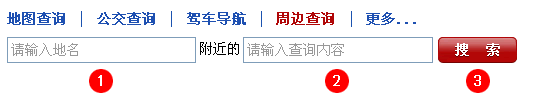

常见问题
怎样使用地图查询功能
在"地图查询"下方信息搜索中键入要查询的位置信息，点击搜索即可查到相关信息，如图：
地图查询 结果：
怎样使用公交查询功能
- 您只需在"公交换乘"的信息搜索栏中输入起点和终点，点击搜索即可得到相关换乘信息。如图：
公交换乘 查询结果：
①换乘方式: 为您提供三种不同的换乘方式"最快到达"、"最少换乘"、"最少步行"。
②换乘概述: 公交换乘梗概以及换乘时间、换乘次数。
③方案详情: 列出换乘的详细方案，当鼠标放在线路上时会出现 "线路详情" 可以打开线路详情页以便获取更多信息，下方有"在地图上显示途经站点" 以便了解各站点在所在的位置。
④返程、驾车方案: 对该起点和终点的返程方案进行查询或驾车查。
•辅助功能:"发送"包括"发短信"-免费把当前查询结果发送到手机；"发送邮件"-把当前查询结果发送到email邮箱；"打印": 打印当前查询信息；"收藏": 将当前链接加为收藏夹（加为书签）；"纠错": 如您发现当前换乘方案有误或您有更好的方案可以告诉我们，以便我们做得更完善；
- 查询"公交线路"信息，需输入线路名称后继续点击搜索。如图：
公交线路 查询结果：
①线路概述: 本线路名、起终站、站数、以及 "详情" 和 "返程"信息 和"地图上显示站点"以便了解各站点在所在的位置。
②线路详情: 本线路详情站点。
③线路其他信息: 该线路的票价、首末车时间...
•辅助功能:"发送"包括"发短信"-免费把当前查询结果发送到手机；"发送邮件"-把当前查询结果发送到email邮箱；"打印": 打印当前查询信息；"收藏": 将当前链接加为收藏夹（加为书签）；"纠错": 如您发现当前换乘方案有误或您有更好的方案可以告诉我们，以便我们做得更完善；
- 要查询"公交站点"获取途径该站点的公交线路信息，输入"站点名称"即可。如图：
公交站点 查询结果：
①相关站点:
②站名详细: 为同一站名的不同位置或交通（如地铁或公交），
③该站名下的线路: 及该站名下的车次列表。点击线路左侧地图会显示该线路；鼠标放在线路上去右侧出现"线路详情"点击跳到该线路详情。
•辅助功能:"发送"包括"发短信"-免费把当前查询结果发送到手机；"发送邮件"-把当前查询结果发送到email邮箱；"打印": 打印当前查询信息；"收藏": 将当前链接加为收藏夹（加为书签）；"纠错": 如您发现当前换乘方案有误或您有更好的方案可以告诉我们，以便我们做得更完善；
在地图上显示所有公交站点
在线路结果或公交换乘结果中勾选"地图上显示站点名称"即可得到站点位置情况，点击地图上的"站点气泡标志"还可以对该站点进行更多查询功能。
怎样使用驾车导航功能
- 驾车导航和公交查询的功能有些相似，您可在"驾车导航"下方的信息搜索栏中，输入起点位置名称和终点位置名称，点击搜索按钮即可。如图：
- 起终点确认页面，还可在此页面上细化或者精确要查询的信息（选择起点和终点后）就可以得到相关详细信息。如图：
驾车结果
①里程和行驶时间: 为您提供驾车路线公里数及车辆大约行驶的时间。
②追加目的地: 驾车查询后可另外追加新的目的地。
③返程线路: 选择此次操作可以为您合理安排驾车返回线路。
④乘公交: 对该"起点和终点"进行公交换乘查询。
•辅助功能:"发送"包括"发短信"-免费把当前查询结果发送到手机；"发送邮件"-把当前查询结果发送到email邮箱；"打印": 打印当前查询信息；"收藏": 将当前链接加为收藏夹（加为书签）；"纠错": 如您发现当前换乘方案有误或您有更好的方案可以告诉我们，以便我们做得更完善；
怎样使用周边查询功能
周边查询功能就更为简便，您只需在"周边查询"下方的信息搜索栏中分别键入地名和您要查询的相关信息即可，如图：
了解查询目标的详细情况
如果您想了解查询目标的详细情况，如：电话、地址、周边的餐厅或者其他相关属性、网友评论，只需点击查询目标后面的"更多"连接，即可获得。
为什么有的地点查不到
哈尔滨公交地图是严格遵守国家相关信息的，如军用位置信息、以及一些国家隐秘信息，都是查询不到的，对您的使用不便还请谅解，如果您没有查询到所需要的信息或者查到的信息有错误，还可以与我们的客服人员联系，提出您的意见和建议。
如何处理地图不显示或者地图一闪而过的情况
- 有些上网拦截工具，会导致地图显示不出来。您可以关闭诸如"拦截浮动广告"之类的选项，或者卸载拦截工具，地图就能显示。常见的拦截工具主要包括3721上网助手（雅虎助手）、Google / 百度工具条、卡卡等。
- 为正常使用哈尔滨公交地图服务，您需要确保浏览器的JavaScript支持已经打开。打开方式：选择浏览器菜单"工具"－"Internet选项"－"安全"－"默认级别"。
- 可能由防火墙引起，导致地图无法正常显示。请将"www.mapbar.com"、"ditu.mapbar.com"加入防火墙中的信任网站，再打开防火墙，地图便会正常显示。
- 清理一下浏览器的缓存试试：菜单"工具"－"Internet选项"－"常规"－"删除文件"（勾选"删除所有脱机内容"）。
- 光栅图看不见或者一闪而过。加速设置的3721为不播放网页中的FLASH动画，修改3721参数，设置为播放网页中的FLASH动画；如果用的是类似腾讯TT那样的包装IE的浏览器，请检查一下浏览器的设置：请检查"屏蔽设置"中，是否禁止或隐藏"浮动网页元素"，把这个选项去掉，重新刷新一下，您就能看到地图了；试一下别用其他浏览器，用IE浏览器以后："工具"－"Internet选项"－"高级"－"还原默认设置"，然后在"播放网页中的动画"前打勾；
- 还可试一下点击"工具"－"Internet选项"－右下角的"辅助功能"然后不勾选"不使用网页中指定的颜色"。
地图工具
问题索引
- 怎样改变当前城市？
- 怎样查看地铁线路？
- 怎样查看实时路况？
- 怎样查看摄像头（电子眼）？
- 怎样在指定区域放大或缩小地图？
- 怎样打印地图和查询结果？
- 怎样让地图全屏显示？
- 怎样把查询结果发送给好友？
- 怎样在地图上截屏？
- 怎样在地图上测量距离？
- ①城市区域选择: 可以选择地图当前城市和城区，移动地图该区会自动匹配。
-
②地铁、实时路况、摄像头:
2.1 选择"地铁"会弹出地铁图例，地图上会显示所有地铁，可点击弹层中某条线路在地图上单独显示。 2.2 选择"实时路况"会弹出路况相关信息（其中可以搜索地点路况），同时地铁上显示路况。 2.3 选择"摄像头"会弹出四种摄像头，选择需要摄像头会在地图上显示。
-
③测距、放大、缩小、截图、复制链接、打印、发送、全屏:
3.1 选择"测距"同 鱼骨 中间的 尺子，在地图的起点单击，在结束的位置双击鼠标，即可得到两点或多点之间的距离 如图： 3.2 选择"放大"或"缩小"，在地图上可拉框缩放指定区域。 3.2.1在任何状态下滚动鼠标滚轴地图会以鼠标指针为中心缩放，往前滚动为放大，往后为缩小如图： 3.3 选择"截图"，这时您只需在目标区域点击鼠标并拖动到制定位置后松开鼠标左键，点右下角的"预览"可以在新窗口预览截图，点"保存"就可以保存了。如果对截取的地图不满意，还可以点击"取消"按钮后终至当前操作。
3.4 在地图工具条或右侧查询结果下放选择"打印"，会弹出新的打印内容页面，可选择带地图或只打印文字，（注：打印前请先确认地点及线路已经选中）如图：
3.5 在地图工具条或右侧查询结果下放选择"发送" 这个功能功能可以免费短信发送至手机、发送邮件、下载至GPS设备中。（注：必须选中当前查询方案时才能发送！） 如图：
3.6 要想全屏显示地图信息，在地图工具条选择"全屏"即可，点击"还原"返回原来状态 。 如图：
3.3 选择"截图"，这时您只需在目标区域点击鼠标并拖动到制定位置后松开鼠标左键，点右下角的"预览"可以在新窗口预览截图，点"保存"就可以保存了。如果对截取的地图不满意，还可以点击"取消"按钮后终至当前操作。
3.4 在地图工具条或右侧查询结果下放选择"打印"，会弹出新的打印内容页面，可选择带地图或只打印文字，（注：打印前请先确认地点及线路已经选中）如图：
3.5 在地图工具条或右侧查询结果下放选择"发送" 这个功能功能可以免费短信发送至手机、发送邮件、下载至GPS设备中。（注：必须选中当前查询方案时才能发送！） 如图：
3.6 要想全屏显示地图信息，在地图工具条选择"全屏"即可，点击"还原"返回原来状态 。 如图：
- ④鱼骨:鼠标放上显示地图缩放显示级别。上侧园形四个方向箭头为地图移动方向，中间为地图测距尺子。
-
⑤叠加层:
位于地图左下角叠加层为您提供了：餐馆、银行、酒店、商场、超市、医院、药店、邮局、停车场、加油站... 周边相关位置信息，点击选取在当地图当前位置显示。 - ⑥隐藏结果面板:位于地图和右侧面板中间，用于隐藏面板以显示更大地图空间；点击地图上方全屏时会自动隐藏。
地图图例
交通图例
- 机场
- 火车站
- 港口、码头
 公交站
公交站- 停车场
- 北京地铁站
- 天津地铁站
- 上海地铁站
- 重庆地铁站
- 南京地铁站
- 广州地铁站
- 深圳地铁站
- 香港地铁站
兴趣点图例
- 小区
- 医院
- 银行
- 商场、超市
- 大厦、写字楼
- 宾馆、酒店
- 餐饮
- 麦当劳
- 肯德基
- 体育场、体育馆
- 图书馆、出版社
- 影剧院 音乐厅
- 游乐场
- 邮政局
- 学校
- 公园
- 古迹、寺院、道观
- 公园
- 山峰
- 其他
如果您有建议或疑问，我们非常愿意听到您的想法。
提交成功
谢谢您的建议，您的关注会让Mapbar做的更好！